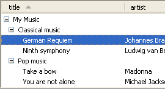
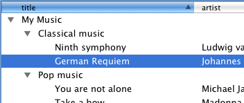

| Version: 2.9.4 |
#include </home/zeitlin/src/wx/github/interface/wx/dataview.h>
 Inheritance diagram for wxDataViewCtrl:
Inheritance diagram for wxDataViewCtrl:wxDataViewCtrl is a control to display data either in a tree like fashion or in a tabular form or both.
If you only need to display a simple tree structure with an API more like the older wxTreeCtrl class, then the specialized wxDataViewTreeCtrl can be used. Likewise, if you only want to display simple table structure you can use the specialized wxDataViewListCtrl class. Both wxDataViewTreeCtrl and wxDataViewListCtrl can be used without defining your own wxDataViewModel.
A wxDataViewItem is used to represent a (visible) item in the control.
Unlike wxListCtrl, wxDataViewCtrl doesn't get its data from the user through virtual functions or by setting it directly. Instead you need to write your own wxDataViewModel and associate it with this control. Then you need to add a number of wxDataViewColumn to this control to define what each column shall display. Each wxDataViewColumn in turn owns 1 instance of a wxDataViewRenderer to render its cells.
A number of standard renderers for rendering text, dates, images, toggle, a progress bar etc. are provided. Additionally, the user can write custom renderers deriving from wxDataViewCustomRenderer for displaying anything.
All data transfer from the control to the model and the user code is done through wxVariant which can be extended to support more data formats as necessary. Accordingly, all type information uses the strings returned from wxVariant::GetType.
This class supports the following styles:
The following event handler macros redirect the events to member function handlers 'func' with prototypes like:
Event macros for events emitted by this class:
wxEVT_COMMAND_DATAVIEW_SELECTION_CHANGED event. wxEVT_COMMAND_DATAVIEW_ITEM_ACTIVATED event. This event is triggered by double clicking an item or pressing some special key (usually "Enter") when it is focused. wxEVT_COMMAND_DATAVIEW_ITEM_START_EDITING event. This event can be vetoed in order to prevent editing on an item by item basis. wxEVT_COMMAND_DATAVIEW_ITEM_EDITING_STARTED event. wxEVT_COMMAND_DATAVIEW_ITEM_EDITING_DONE event. wxEVT_COMMAND_DATAVIEW_ITEM_COLLAPSING event. wxEVT_COMMAND_DATAVIEW_ITEM_COLLAPSED event. wxEVT_COMMAND_DATAVIEW_ITEM_EXPANDING event. wxEVT_COMMAND_DATAVIEW_ITEM_EXPANDED event. wxEVT_COMMAND_DATAVIEW_ITEM_VALUE_CHANGED event. wxEVT_COMMAND_DATAVIEW_ITEM_CONTEXT_MENU event generated when the user right clicks inside the control. Notice that this menu is generated even if the click didn't occur on any valid item, in this case wxDataViewEvent::GetItem() simply returns an invalid item. wxEVT_COMMAND_DATAVIEW_COLUMN_HEADER_CLICK event. wxEVT_COMMAND_DATAVIEW_COLUMN_HEADER_RIGHT_CLICKED event. wxEVT_COMMAND_DATAVIEW_COLUMN_SORTED event. wxEVT_COMMAND_DATAVIEW_COLUMN_REORDERED event. wxEVT_COMMAND_DATAVIEW_ITEM_BEGIN_DRAG event. wxEVT_COMMAND_DATAVIEW_ITEM_DROP_POSSIBLE event. wxEVT_COMMAND_DATAVIEW_ITEM_DROP event. Notice that this control doesn't allow to process generic mouse events such as wxEVT_LEFT_DOWN in all ports (notably it doesn't work in wxGTK). If you need to handle any mouse events not covered by the ones above, consider using a custom renderer for the cells that must handle them.
|  |  |  |
| wxMSW appearance | wxGTK appearance | wxMac appearance |
Public Member Functions | |
| wxDataViewCtrl () | |
| Default Constructor. | |
| wxDataViewCtrl (wxWindow *parent, wxWindowID id, const wxPoint &pos=wxDefaultPosition, const wxSize &size=wxDefaultSize, long style=0, const wxValidator &validator=wxDefaultValidator, const wxString &name=wxDataViewCtrlNameStr) | |
| Constructor. | |
| virtual | ~wxDataViewCtrl () |
| Destructor. | |
| virtual bool | AppendColumn (wxDataViewColumn *col) |
| Appends a wxDataViewColumn to the control. | |
| virtual bool | PrependColumn (wxDataViewColumn *col) |
| Prepends a wxDataViewColumn to the control. | |
| virtual bool | InsertColumn (unsigned int pos, wxDataViewColumn *col) |
| Inserts a wxDataViewColumn to the control. | |
| virtual bool | AssociateModel (wxDataViewModel *model) |
| Associates a wxDataViewModel with the control. | |
| virtual bool | ClearColumns () |
| Removes all columns. | |
| virtual void | Collapse (const wxDataViewItem &item) |
| Collapses the item. | |
| bool | Create (wxWindow *parent, wxWindowID id, const wxPoint &pos=wxDefaultPosition, const wxSize &size=wxDefaultSize, long style=0, const wxValidator &validator=wxDefaultValidator, const wxString &name=wxDataViewCtrlNameStr) |
| Create the control. | |
| virtual bool | DeleteColumn (wxDataViewColumn *column) |
| Deletes given column. | |
| virtual void | EditItem (const wxDataViewItem &item, const wxDataViewColumn *column) |
| Programmatically starts editing given cell of item. | |
| virtual bool | EnableDragSource (const wxDataFormat &format) |
| Enable drag operations using the given format. | |
| virtual bool | EnableDropTarget (const wxDataFormat &format) |
| Enable drop operations using the given format. | |
| virtual void | EnsureVisible (const wxDataViewItem &item, const wxDataViewColumn *column=NULL) |
| Call this to ensure that the given item is visible. | |
| virtual void | Expand (const wxDataViewItem &item) |
| Expands the item. | |
| virtual void | ExpandAncestors (const wxDataViewItem &item) |
| Expands all ancestors of the item. | |
| virtual wxDataViewColumn * | GetColumn (unsigned int pos) const |
| Returns pointer to the column. | |
| virtual unsigned int | GetColumnCount () const |
| Returns the number of columns. | |
| virtual int | GetColumnPosition (const wxDataViewColumn *column) const |
| Returns the position of the column or -1 if not found in the control. | |
| wxDataViewColumn * | GetExpanderColumn () const |
| Returns column containing the expanders. | |
| wxDataViewItem | GetCurrentItem () const |
| Returns the currently focused item. | |
| wxDataViewColumn * | GetCurrentColumn () const |
| Returns the column that currently has focus. | |
| int | GetIndent () const |
| Returns indentation. | |
| virtual wxRect | GetItemRect (const wxDataViewItem &item, const wxDataViewColumn *col=NULL) const |
| Returns item rectangle. | |
| wxDataViewModel * | GetModel () |
| Returns pointer to the data model associated with the control (if any). | |
| virtual int | GetSelectedItemsCount () const |
| Returns the number of currently selected items. | |
| virtual wxDataViewItem | GetSelection () const |
| Returns first selected item or an invalid item if none is selected. | |
| virtual int | GetSelections (wxDataViewItemArray &sel) const |
| Fills sel with currently selected items and returns their number. | |
| virtual wxDataViewColumn * | GetSortingColumn () const |
| Returns the wxDataViewColumn currently responsible for sorting or NULL if none has been selected. | |
| bool | HasSelection () const |
| Returns true if any items are currently selected. | |
| virtual void | HitTest (const wxPoint &point, wxDataViewItem &item, wxDataViewColumn *&col) const |
| Hittest. | |
| virtual bool | IsExpanded (const wxDataViewItem &item) const |
| Return true if the item is expanded. | |
| virtual bool | IsSelected (const wxDataViewItem &item) const |
| Return true if the item is selected. | |
| virtual void | Select (const wxDataViewItem &item) |
| Select the given item. | |
| virtual void | SelectAll () |
| Select all items. | |
| void | SetExpanderColumn (wxDataViewColumn *col) |
| Set which column shall contain the tree-like expanders. | |
| void | SetCurrentItem (const wxDataViewItem &item) |
| Changes the currently focused item. | |
| void | SetIndent (int indent) |
| Sets the indentation. | |
| virtual void | SetSelections (const wxDataViewItemArray &sel) |
| Sets the selection to the array of wxDataViewItems. | |
| virtual void | Unselect (const wxDataViewItem &item) |
| Unselect the given item. | |
| virtual void | UnselectAll () |
| Unselect all item. | |
| virtual bool | SetRowHeight (int rowHeight) |
| Sets the row height. | |
| wxDataViewColumn * | AppendBitmapColumn (const wxString &label, unsigned int model_column, wxDataViewCellMode mode=wxDATAVIEW_CELL_INERT, int width=-1, wxAlignment align=wxALIGN_CENTER, int flags=wxDATAVIEW_COL_RESIZABLE) |
| Appends a column for rendering a bitmap. | |
| wxDataViewColumn * | AppendBitmapColumn (const wxBitmap &label, unsigned int model_column, wxDataViewCellMode mode=wxDATAVIEW_CELL_INERT, int width=-1, wxAlignment align=wxALIGN_CENTER, int flags=wxDATAVIEW_COL_RESIZABLE) |
| Appends a column for rendering a bitmap. | |
| wxDataViewColumn * | AppendDateColumn (const wxString &label, unsigned int model_column, wxDataViewCellMode mode=wxDATAVIEW_CELL_ACTIVATABLE, int width=-1, wxAlignment align=wxALIGN_NOT, int flags=wxDATAVIEW_COL_RESIZABLE) |
| Appends a column for rendering a date. | |
| wxDataViewColumn * | AppendDateColumn (const wxBitmap &label, unsigned int model_column, wxDataViewCellMode mode=wxDATAVIEW_CELL_ACTIVATABLE, int width=-1, wxAlignment align=wxALIGN_NOT, int flags=wxDATAVIEW_COL_RESIZABLE) |
| Appends a column for rendering a date. | |
| wxDataViewColumn * | AppendIconTextColumn (const wxString &label, unsigned int model_column, wxDataViewCellMode mode=wxDATAVIEW_CELL_INERT, int width=-1, wxAlignment align=wxALIGN_NOT, int flags=wxDATAVIEW_COL_RESIZABLE) |
| Appends a column for rendering text with an icon. | |
| wxDataViewColumn * | AppendIconTextColumn (const wxBitmap &label, unsigned int model_column, wxDataViewCellMode mode=wxDATAVIEW_CELL_INERT, int width=-1, wxAlignment align=wxALIGN_NOT, int flags=wxDATAVIEW_COL_RESIZABLE) |
| Appends a column for rendering text with an icon. | |
| wxDataViewColumn * | AppendProgressColumn (const wxString &label, unsigned int model_column, wxDataViewCellMode mode=wxDATAVIEW_CELL_INERT, int width=80, wxAlignment align=wxALIGN_CENTER, int flags=wxDATAVIEW_COL_RESIZABLE) |
| Appends a column for rendering a progress indicator. | |
| wxDataViewColumn * | AppendProgressColumn (const wxBitmap &label, unsigned int model_column, wxDataViewCellMode mode=wxDATAVIEW_CELL_INERT, int width=80, wxAlignment align=wxALIGN_CENTER, int flags=wxDATAVIEW_COL_RESIZABLE) |
| Appends a column for rendering a progress indicator. | |
| wxDataViewColumn * | AppendTextColumn (const wxString &label, unsigned int model_column, wxDataViewCellMode mode=wxDATAVIEW_CELL_INERT, int width=-1, wxAlignment align=wxALIGN_NOT, int flags=wxDATAVIEW_COL_RESIZABLE) |
| Appends a column for rendering text. | |
| wxDataViewColumn * | AppendTextColumn (const wxBitmap &label, unsigned int model_column, wxDataViewCellMode mode=wxDATAVIEW_CELL_INERT, int width=-1, wxAlignment align=wxALIGN_NOT, int flags=wxDATAVIEW_COL_RESIZABLE) |
| Appends a column for rendering text. | |
| wxDataViewColumn * | AppendToggleColumn (const wxString &label, unsigned int model_column, wxDataViewCellMode mode=wxDATAVIEW_CELL_INERT, int width=30, wxAlignment align=wxALIGN_CENTER, int flags=wxDATAVIEW_COL_RESIZABLE) |
| Appends a column for rendering a toggle. | |
| wxDataViewColumn * | AppendToggleColumn (const wxBitmap &label, unsigned int model_column, wxDataViewCellMode mode=wxDATAVIEW_CELL_INERT, int width=30, wxAlignment align=wxALIGN_CENTER, int flags=wxDATAVIEW_COL_RESIZABLE) |
| Appends a column for rendering a toggle. | |
| wxDataViewCtrl::wxDataViewCtrl | ( | ) |
Default Constructor.
| wxDataViewCtrl::wxDataViewCtrl | ( | wxWindow * | parent, |
| wxWindowID | id, | ||
| const wxPoint & | pos = wxDefaultPosition, |
||
| const wxSize & | size = wxDefaultSize, |
||
| long | style = 0, |
||
| const wxValidator & | validator = wxDefaultValidator, |
||
| const wxString & | name = wxDataViewCtrlNameStr |
||
| ) |
Constructor.
Calls Create().
| virtual wxDataViewCtrl::~wxDataViewCtrl | ( | ) | [virtual] |
Destructor.
| wxDataViewColumn* wxDataViewCtrl::AppendBitmapColumn | ( | const wxString & | label, |
| unsigned int | model_column, | ||
| wxDataViewCellMode | mode = wxDATAVIEW_CELL_INERT, |
||
| int | width = -1, |
||
| wxAlignment | align = wxALIGN_CENTER, |
||
| int | flags = wxDATAVIEW_COL_RESIZABLE |
||
| ) |
Appends a column for rendering a bitmap.
Returns the wxDataViewColumn created in the function or NULL on failure.
| wxDataViewColumn* wxDataViewCtrl::AppendBitmapColumn | ( | const wxBitmap & | label, |
| unsigned int | model_column, | ||
| wxDataViewCellMode | mode = wxDATAVIEW_CELL_INERT, |
||
| int | width = -1, |
||
| wxAlignment | align = wxALIGN_CENTER, |
||
| int | flags = wxDATAVIEW_COL_RESIZABLE |
||
| ) |
Appends a column for rendering a bitmap.
Returns the wxDataViewColumn created in the function or NULL on failure.
| virtual bool wxDataViewCtrl::AppendColumn | ( | wxDataViewColumn * | col | ) | [virtual] |
Appends a wxDataViewColumn to the control.
Returns true on success.
Note that there is a number of short cut methods which implicitly create a wxDataViewColumn and a wxDataViewRenderer for it (see below).
Reimplemented in wxDataViewListCtrl.
| wxDataViewColumn* wxDataViewCtrl::AppendDateColumn | ( | const wxString & | label, |
| unsigned int | model_column, | ||
| wxDataViewCellMode | mode = wxDATAVIEW_CELL_ACTIVATABLE, |
||
| int | width = -1, |
||
| wxAlignment | align = wxALIGN_NOT, |
||
| int | flags = wxDATAVIEW_COL_RESIZABLE |
||
| ) |
Appends a column for rendering a date.
Returns the wxDataViewColumn created in the function or NULL on failure.
| wxDataViewColumn* wxDataViewCtrl::AppendDateColumn | ( | const wxBitmap & | label, |
| unsigned int | model_column, | ||
| wxDataViewCellMode | mode = wxDATAVIEW_CELL_ACTIVATABLE, |
||
| int | width = -1, |
||
| wxAlignment | align = wxALIGN_NOT, |
||
| int | flags = wxDATAVIEW_COL_RESIZABLE |
||
| ) |
Appends a column for rendering a date.
Returns the wxDataViewColumn created in the function or NULL on failure.
| wxDataViewColumn* wxDataViewCtrl::AppendIconTextColumn | ( | const wxString & | label, |
| unsigned int | model_column, | ||
| wxDataViewCellMode | mode = wxDATAVIEW_CELL_INERT, |
||
| int | width = -1, |
||
| wxAlignment | align = wxALIGN_NOT, |
||
| int | flags = wxDATAVIEW_COL_RESIZABLE |
||
| ) |
Appends a column for rendering text with an icon.
Returns the wxDataViewColumn created in the function or NULL on failure. This method uses the wxDataViewIconTextRenderer class.
| wxDataViewColumn* wxDataViewCtrl::AppendIconTextColumn | ( | const wxBitmap & | label, |
| unsigned int | model_column, | ||
| wxDataViewCellMode | mode = wxDATAVIEW_CELL_INERT, |
||
| int | width = -1, |
||
| wxAlignment | align = wxALIGN_NOT, |
||
| int | flags = wxDATAVIEW_COL_RESIZABLE |
||
| ) |
Appends a column for rendering text with an icon.
Returns the wxDataViewColumn created in the function or NULL on failure. This method uses the wxDataViewIconTextRenderer class.
| wxDataViewColumn* wxDataViewCtrl::AppendProgressColumn | ( | const wxString & | label, |
| unsigned int | model_column, | ||
| wxDataViewCellMode | mode = wxDATAVIEW_CELL_INERT, |
||
| int | width = 80, |
||
| wxAlignment | align = wxALIGN_CENTER, |
||
| int | flags = wxDATAVIEW_COL_RESIZABLE |
||
| ) |
Appends a column for rendering a progress indicator.
Returns the wxDataViewColumn created in the function or NULL on failure.
| wxDataViewColumn* wxDataViewCtrl::AppendProgressColumn | ( | const wxBitmap & | label, |
| unsigned int | model_column, | ||
| wxDataViewCellMode | mode = wxDATAVIEW_CELL_INERT, |
||
| int | width = 80, |
||
| wxAlignment | align = wxALIGN_CENTER, |
||
| int | flags = wxDATAVIEW_COL_RESIZABLE |
||
| ) |
Appends a column for rendering a progress indicator.
Returns the wxDataViewColumn created in the function or NULL on failure.
| wxDataViewColumn* wxDataViewCtrl::AppendTextColumn | ( | const wxString & | label, |
| unsigned int | model_column, | ||
| wxDataViewCellMode | mode = wxDATAVIEW_CELL_INERT, |
||
| int | width = -1, |
||
| wxAlignment | align = wxALIGN_NOT, |
||
| int | flags = wxDATAVIEW_COL_RESIZABLE |
||
| ) |
Appends a column for rendering text.
Returns the wxDataViewColumn created in the function or NULL on failure.
| wxDataViewColumn* wxDataViewCtrl::AppendTextColumn | ( | const wxBitmap & | label, |
| unsigned int | model_column, | ||
| wxDataViewCellMode | mode = wxDATAVIEW_CELL_INERT, |
||
| int | width = -1, |
||
| wxAlignment | align = wxALIGN_NOT, |
||
| int | flags = wxDATAVIEW_COL_RESIZABLE |
||
| ) |
Appends a column for rendering text.
Returns the wxDataViewColumn created in the function or NULL on failure.
| wxDataViewColumn* wxDataViewCtrl::AppendToggleColumn | ( | const wxString & | label, |
| unsigned int | model_column, | ||
| wxDataViewCellMode | mode = wxDATAVIEW_CELL_INERT, |
||
| int | width = 30, |
||
| wxAlignment | align = wxALIGN_CENTER, |
||
| int | flags = wxDATAVIEW_COL_RESIZABLE |
||
| ) |
Appends a column for rendering a toggle.
Returns the wxDataViewColumn created in the function or NULL on failure.
| wxDataViewColumn* wxDataViewCtrl::AppendToggleColumn | ( | const wxBitmap & | label, |
| unsigned int | model_column, | ||
| wxDataViewCellMode | mode = wxDATAVIEW_CELL_INERT, |
||
| int | width = 30, |
||
| wxAlignment | align = wxALIGN_CENTER, |
||
| int | flags = wxDATAVIEW_COL_RESIZABLE |
||
| ) |
Appends a column for rendering a toggle.
Returns the wxDataViewColumn created in the function or NULL on failure.
| virtual bool wxDataViewCtrl::AssociateModel | ( | wxDataViewModel * | model | ) | [virtual] |
Associates a wxDataViewModel with the control.
This increases the reference count of the model by 1.
| virtual bool wxDataViewCtrl::ClearColumns | ( | ) | [virtual] |
Removes all columns.
| virtual void wxDataViewCtrl::Collapse | ( | const wxDataViewItem & | item | ) | [virtual] |
Collapses the item.
| bool wxDataViewCtrl::Create | ( | wxWindow * | parent, |
| wxWindowID | id, | ||
| const wxPoint & | pos = wxDefaultPosition, |
||
| const wxSize & | size = wxDefaultSize, |
||
| long | style = 0, |
||
| const wxValidator & | validator = wxDefaultValidator, |
||
| const wxString & | name = wxDataViewCtrlNameStr |
||
| ) |
| virtual bool wxDataViewCtrl::DeleteColumn | ( | wxDataViewColumn * | column | ) | [virtual] |
Deletes given column.
| virtual void wxDataViewCtrl::EditItem | ( | const wxDataViewItem & | item, |
| const wxDataViewColumn * | column | ||
| ) | [virtual] |
Programmatically starts editing given cell of item.
Doesn't do anything if the item or this column is not editable.
| virtual bool wxDataViewCtrl::EnableDragSource | ( | const wxDataFormat & | format | ) | [virtual] |
Enable drag operations using the given format.
| virtual bool wxDataViewCtrl::EnableDropTarget | ( | const wxDataFormat & | format | ) | [virtual] |
Enable drop operations using the given format.
| virtual void wxDataViewCtrl::EnsureVisible | ( | const wxDataViewItem & | item, |
| const wxDataViewColumn * | column = NULL |
||
| ) | [virtual] |
Call this to ensure that the given item is visible.
| virtual void wxDataViewCtrl::Expand | ( | const wxDataViewItem & | item | ) | [virtual] |
Expands the item.
| virtual void wxDataViewCtrl::ExpandAncestors | ( | const wxDataViewItem & | item | ) | [virtual] |
Expands all ancestors of the item.
This method also ensures that the item itself as well as all ancestor items have been read from the model by the control.
| virtual wxDataViewColumn* wxDataViewCtrl::GetColumn | ( | unsigned int | pos | ) | const [virtual] |
Returns pointer to the column.
pos refers to the position in the control which may change after reordering columns by the user.
| virtual unsigned int wxDataViewCtrl::GetColumnCount | ( | ) | const [virtual] |
Returns the number of columns.
| virtual int wxDataViewCtrl::GetColumnPosition | ( | const wxDataViewColumn * | column | ) | const [virtual] |
Returns the position of the column or -1 if not found in the control.
| wxDataViewColumn* wxDataViewCtrl::GetCurrentColumn | ( | ) | const |
Returns the column that currently has focus.
If the focus is set to individual cell within the currently focused item (as opposed to being on the item as a whole), then this is the column that the focus is on.
Returns NULL if no column currently has focus.
| wxDataViewItem wxDataViewCtrl::GetCurrentItem | ( | ) | const |
Returns the currently focused item.
This is the item that the keyboard commands apply to. It may be invalid if there is no focus currently.
This method is mostly useful for the controls with wxDV_MULTIPLE style as in the case of single selection it returns the same thing as GetSelection().
Notice that under all platforms except Mac OS X the currently focused item may be selected or not but under OS X the current item is always selected.
| wxDataViewColumn* wxDataViewCtrl::GetExpanderColumn | ( | ) | const |
Returns column containing the expanders.
| int wxDataViewCtrl::GetIndent | ( | ) | const |
Returns indentation.
| virtual wxRect wxDataViewCtrl::GetItemRect | ( | const wxDataViewItem & | item, |
| const wxDataViewColumn * | col = NULL |
||
| ) | const [virtual] |
Returns item rectangle.
This method is currently not implemented at all in wxGTK and only implemented for non-NULL col argument in wxOSX. It is fully implemented in the generic version of the control.
| item | A valid item. |
| col | If non-NULL, the rectangle returned corresponds to the intersection of the item with the specified column. If NULL, the rectangle spans all the columns. |
| wxDataViewModel* wxDataViewCtrl::GetModel | ( | ) |
Returns pointer to the data model associated with the control (if any).
| virtual int wxDataViewCtrl::GetSelectedItemsCount | ( | ) | const [virtual] |
Returns the number of currently selected items.
This method may be called for both the controls with single and multiple selections and returns the number of selected item, possibly 0, in any case.
| virtual wxDataViewItem wxDataViewCtrl::GetSelection | ( | ) | const [virtual] |
Returns first selected item or an invalid item if none is selected.
This method may be called for both the controls with single and multiple selections but returns an invalid item if more than one item is selected in the latter case, use HasSelection() to determine if there are any selected items when using multiple selection.
| virtual int wxDataViewCtrl::GetSelections | ( | wxDataViewItemArray & | sel | ) | const [virtual] |
Fills sel with currently selected items and returns their number.
This method may be called for both the controls with single and multiple selections. In the single selection case it returns the array with at most one element in it.
| virtual wxDataViewColumn* wxDataViewCtrl::GetSortingColumn | ( | ) | const [virtual] |
Returns the wxDataViewColumn currently responsible for sorting or NULL if none has been selected.
| bool wxDataViewCtrl::HasSelection | ( | ) | const |
Returns true if any items are currently selected.
This method may be called for both the controls with single and multiple selections.
Calling this method is equivalent to calling GetSelectedItemsCount() and comparing its result with 0 but is more clear and might also be implemented more efficiently in the future.
| virtual void wxDataViewCtrl::HitTest | ( | const wxPoint & | point, |
| wxDataViewItem & | item, | ||
| wxDataViewColumn *& | col | ||
| ) | const [virtual] |
Hittest.
| virtual bool wxDataViewCtrl::InsertColumn | ( | unsigned int | pos, |
| wxDataViewColumn * | col | ||
| ) | [virtual] |
Inserts a wxDataViewColumn to the control.
Returns true on success.
Reimplemented in wxDataViewListCtrl.
| virtual bool wxDataViewCtrl::IsExpanded | ( | const wxDataViewItem & | item | ) | const [virtual] |
Return true if the item is expanded.
| virtual bool wxDataViewCtrl::IsSelected | ( | const wxDataViewItem & | item | ) | const [virtual] |
Return true if the item is selected.
| virtual bool wxDataViewCtrl::PrependColumn | ( | wxDataViewColumn * | col | ) | [virtual] |
Prepends a wxDataViewColumn to the control.
Returns true on success.
Note that there is a number of short cut methods which implicitly create a wxDataViewColumn and a wxDataViewRenderer for it.
Reimplemented in wxDataViewListCtrl.
| virtual void wxDataViewCtrl::Select | ( | const wxDataViewItem & | item | ) | [virtual] |
Select the given item.
In single selection mode this changes the (unique) currently selected item. In multi selection mode, the item is selected and the previously selected items remain selected.
| virtual void wxDataViewCtrl::SelectAll | ( | ) | [virtual] |
Select all items.
| void wxDataViewCtrl::SetCurrentItem | ( | const wxDataViewItem & | item | ) |
Changes the currently focused item.
The item parameter must be valid, there is no way to remove the current item from the control.
In single selection mode, calling this method is the same as calling Select() and is thus not very useful. In multiple selection mode this method only moves the current item however without changing the selection except under OS X where the current item is always selected, so calling SetCurrentItem() selects item if it hadn't been selected before.
| void wxDataViewCtrl::SetExpanderColumn | ( | wxDataViewColumn * | col | ) |
Set which column shall contain the tree-like expanders.
| void wxDataViewCtrl::SetIndent | ( | int | indent | ) |
Sets the indentation.
| virtual bool wxDataViewCtrl::SetRowHeight | ( | int | rowHeight | ) | [virtual] |
Sets the row height.
This function can only be used when all rows have the same height, i.e. when wxDV_VARIABLE_LINE_HEIGHT flag is not used.
Currently this is implemented in the generic and native GTK versions only and nothing is done (and false returned) when using OS X port.
Also notice that this method can only be used to increase the row height compared with the default one (as determined by the return value of wxDataViewRenderer::GetSize()), if it is set to a too small value then the minimum required by the renderers will be used.
| virtual void wxDataViewCtrl::SetSelections | ( | const wxDataViewItemArray & | sel | ) | [virtual] |
Sets the selection to the array of wxDataViewItems.
| virtual void wxDataViewCtrl::Unselect | ( | const wxDataViewItem & | item | ) | [virtual] |
Unselect the given item.
| virtual void wxDataViewCtrl::UnselectAll | ( | ) | [virtual] |
Unselect all item.
This method only has effect if multiple selections are allowed.